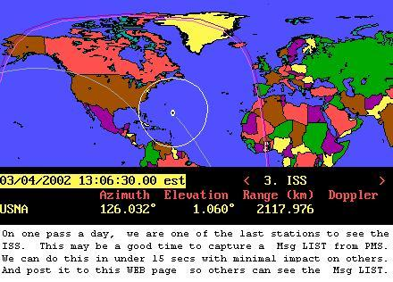
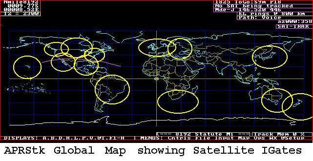
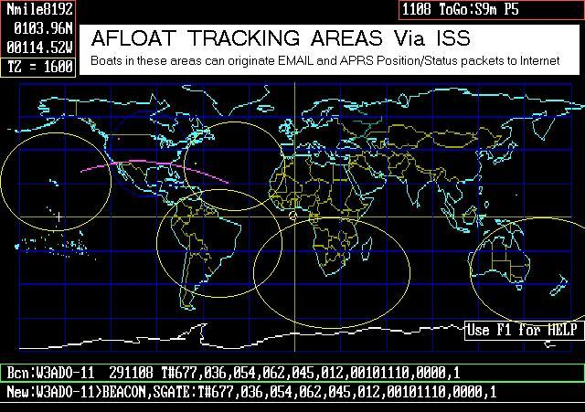

ISS/APRS Satellite Frequently Asked Questions
ISS/APRS Satellite Frequently Asked Questions
ISS/APRS Satellite Frequently Asked Questions
ISS/APRS Satellite Frequently Asked QuestionsPCsat-1 in orbit since 2001 semi-operational
ARISS on the ISS since 2007
Psat Operational May 2015
BRICSAT-1 launched with PSAT, but insufficient power budget
QIKcom-1 with terrestrial APRS alert beacon on ISS, but activation blocked by FCC SNAFU
QIKcom-2 with APRStt for launch Summer 2016
PSAT-2 To be Launched spring of 2017
BRICSAT-2 To be Launched spring of 2017
ASTARS missions: Prior APRS missions on other spacecraft, ISS, Shuttle and MIR
ISS packet operation relies on the Ericcson radio and an extrnal TNC or on the Kenwood D700 installed in late December 2003. This system lets schools and students access/or use the packet transponder on ISS without dependence on the very busy schedule of the astronauts. In 2007 this ISS packet operation switched to the global APRS satellite channel on 145.825 to join the constellation of other AX.25 1200 baud packet digipeaters listed above.
The ISS tries to keep the ISS Packet station on 145.825 when it is available. This lets the packet downlink from ISS operate with the other APRS satellites there and its downlink to be collected by the established global network of APRS Internet-Gateway stations feeding the data to the ARISS-APRS web page.
 JOINT DIGIPEATER CONSTELLATIONS The first joint operations test
(11-23 Oct 2002) was successful during which the ISS packet station joined
the PCsat frequency so
that both could operate as a joint constellation of two satellites, not only
doubling the number of available pass times, but also allowing some dual-hop links.
See report on PCsat web page. Since then this experiment
has been conducted several other times, most recently early Dec 2005 between PCSAT2
and PCSAT-1 both operating on 145.825, the Satellite Digipeater frequency.
. The longest dual dual hop packet observed is shown at right:
JOINT DIGIPEATER CONSTELLATIONS The first joint operations test
(11-23 Oct 2002) was successful during which the ISS packet station joined
the PCsat frequency so
that both could operate as a joint constellation of two satellites, not only
doubling the number of available pass times, but also allowing some dual-hop links.
See report on PCsat web page. Since then this experiment
has been conducted several other times, most recently early Dec 2005 between PCSAT2
and PCSAT-1 both operating on 145.825, the Satellite Digipeater frequency.
. The longest dual dual hop packet observed is shown at right:
This page contains notes about AX.25 Packet radio operations via the ISS or other
satellites. Introduced to the manned
space programs in 1990 on the Shuttle and MIR, packet radio first became operational
on the
present ISS on 22 Feb 2001, and operated well for over a year until it became
intermittant and was replaced with the new Kenwood D700. This new system, like PCsat,
consists of a TNC which can operate in two modes:
UI DIGIPEATER: This WEB page addresses how to use the space based UI/APRS digipeaters for maximum enjoyment by everyone by using UI or APRS packets. Typically 50 to 100 stations per day use this system. With well over 3500 stations captured and archived by Steve Dimse's worldwide APRS file server at FINDU.COM. See LIST .
ISS PMS SYSTEM: The PMS (Personal Message System) on ISS was functional and allowed users to send and receive message to the crew. But since it is a single user system, it is extremely rare for average stations to be able to log on. It would be nice if someone automated a process for capturing portions of the PMS Message directory just by monitoring, and then post this data to maintain an up-to-date MESSAGE LIST . Some stations can choose favorible times such as shown below, for accessing the PMS with little impact on others:
 The remainder of this page is dedicated to helping newcomers to understand how to use APRS via the ISS digipeater.
WHAT IS APRS? . APRS was designed in the 1990 time frame as a digital equivalent to simple voice nets; anyone talks, everyone listens and takes notes. APRS was intended for local tactical real-time HUMAN communications of digital information.
WHAT IS APRS NOW? . APRS has evolved into a global digital simplex commmunications channel. You can send almost anything, anytime, anywhere, to anyone. Just make it fit in one packet. Think of it as HAM radio's RF INTERNET and the Kenwood D7 and D700 data radios as your HAM radio WEB/APRS/message capable Radio Display Unit:
Click Here to see how the D7/D700 radios capture and display Satellite Tracking data (and any other local data) for the Traveler without the need for a laptop.
HOW BIG IS APRS? . Basically, APRS is global. It certainly exists in all countries with HAM Radio operators. See the USA live map or Europe. Anywhere in North America tune in 144.39 or in Europe tune in 144.8.
WHAT DOES THIS HAVE TO DO WITH ISS? .
Due to the APRS potential equivalence to a HAM radio "RF INTERNET" and today's kids
total familiarity with the power and fun of the internet, it was thought that letting
the ISS downlink its daily position and status directly to simple ground stations at schools
to kids everywhere might spark an interest in HAM Radio. Further, since each school or
station can fully participate with only a single one-second packet, it was thought this
would let more schools participate on each pass with success.

WHAT IF THE ISS IS NOT IN VIEW DURING MY CLASS? . You can see the live downlink from ISS at any time on the worldwide LIVE LIVE ISS Downlink Map. or the similar PCSAT/ANDE/GO32 site.
HOW DOES THIS LIVE GLOBAL MAP WORK? . In APRS, any packet heard on RF anywhere is contributed to the global network via the IGate function built into almost all copies of APRS. Anyone can be an IGate. Every TCPIP ICON you saw on the above site is feeding data into the network LIVE. Anyone running APRS and also on-line as an IGate can feed ISS packets automatically. With APRS activity in many countries already, we hope to see live feeds daily from the locations shown below: [See Permanent IGates].
WHY MAPS? . Since HAMS communicate without wires, phone numbers or addresses over distances of a few feet to thousands of miles, usually the first thing of interest is where the other guy is. Thus one packet from each station usually contains a position report.
DO I NEED GPS? . No... Only if you are lost...
HOW DO I INPUT MY POSITION WITHOUT A GPS? . Usually with your fingers. On your APRS map, just move your cursor to where you are and CLICK, or hit ENTER, etc... it knows the LAT/LONG of your cursor.
I DON'T HAVE APRS? . You don't need it. Here's how! Just enter your Grid Square, position, status or message in your packets. Any PACKET radio program can send UI packets. Just set the path to CQ VIA ARISS and put the TNC in converse mode and then everything you type will be transmitted in UI mode. If you want APRSdos, you can download it or get other APRS clients for just about any platform or operating system. 
APRS IS COMPLEX? . There are only 4 types of packets. All packets stand alone and are complete in themselves. Position, Status, Messages and Other. By definition, everyone has only ONE position and only ONE status at any one time. They may send multiple individual messages but usually messages are only one line. Here's how!
HOW OFTEN DO I TRANSMIT? . Your objective should be to share the channel with as many other like souls as possible and indicate your participation with one successful packet. See TIMING or the complete rules of UtIquette via ISS or peek at the Real Answer.
CAN I SEND EMAIL? . Yes! Just use an APRS formatted message to "EMAIL" and the first word of your message as the EMAIL address, and the packet will be delivered via conventional Email (assuming it gets digipeated by ISS into the APRS infractstructure somewhere). Here's how!
WHAT PATH DO I USE? . All APRS satellites and the ISS use any of the three generic paths of ARISS or APRSAT or WIDE. Since all of these satellites supports the same generic paths (when properly configured), this means you can operate either ISS or PCsat or PCSAT2 without reconfiguring your TNC! Just set your UNPROTO path to APRS VIA ARISS and it should work with both birds.
HAS IT BEEN USED IN SPACE BEFORE? . Yes. See ASTARS for all the details on APRS in Space.
 WHAT ELSE CAN WE DO WITH ISS/APRS? . Since ISS Digipeater is NOT conjested over 70% of the earths surface, it makes an ideal HAM radio Space Communications Link for stations in remote areas or on the high seas. The map below shows areas where a HAM with a simple 5W APRS HT can periodically report his position, and status and also send Email messages via ISS and the worldwide linked APRS system (as long as we have IGates in the areas shown. Hawaii, Canary Islands, SOuth Africa, New Zealand, Australia, Brazil).
WHATS WRONG? WHY CAN'T I GET IN? . A station that works "OK" for your local BBS 5 miles away, may be operating 10 to 20 dB below its potential due to a variety of factors. See ISS DIFFERENCES.
The remainder of this page details one of the first APRS experiments via SAREX.
APRS Position/Status reporting via SAREX has been authorized on the last several SAREX missions. Using the Shuttle as a digipeater allows schools and stations to communicate amongst each other while seeing all other stations participating in the event.
During June/July 1996, mission STS-78 offered 15 days of SAREX activity, on 75% of all passes with 20 voice, 25 packet and 11 school passes. APRS experiments were authorized and 18 stations successfully relayed their positions via SAREX as shown below. Two others relayed their STATUS but without their position.
A total of 65 APRS packets were received here in Maryland. While 39 stations
reported trying APRS, only 10 APRS stations reported making a serious effort,
trying every pass. The conventional SAREX robot recorded over 1300 successful
packet contacts for 561 different stations with 146 successful two-way
contacts. We believe that APRS makes a good real-time display for schools
involved in SAREX activity with the shuttle as shown below.
As noted above, APRS is available for most platforms and systems. The original was APRSdos and it still runs on ANY old PC even without windows. download the latest APRSxxx.ZIP from TAPR. For best maps for your area also get the Xmapxx.zip file for your area. Then be sure to use PKUNZIP -d when you unzip these files into your APRS directory.
What should we do next?
Here are my suggestions for an external ISS amateur radio kitchen sink payload
that will have muiltiple uplinks and multiple downlinks. One assumes we will use the
2m band as the primary
DONWLINK band (for maximum visibility by low-tech users)
OLD IDEAS IN THE 2001/2002 time frame: These links are preserved here for historical purposes since they reflected the concepts we were promoting back then. There is a lot more going on now with PCSAT2 now on ISS and future payloads also planned for ISS. So read these with a grain-of-salt!
Other ISS Proposals:
Return to the APRS HOMEPAGE
![[See Permanent IGates]](iss-aprs/ISSigate.jpg){kind=link}
{kind=link}
{kind=link}
{kind=link}
{kind=link}
{kind=link}